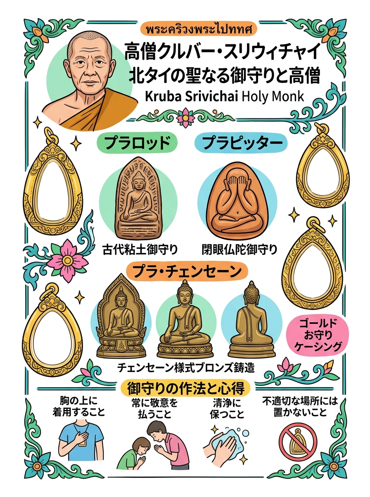
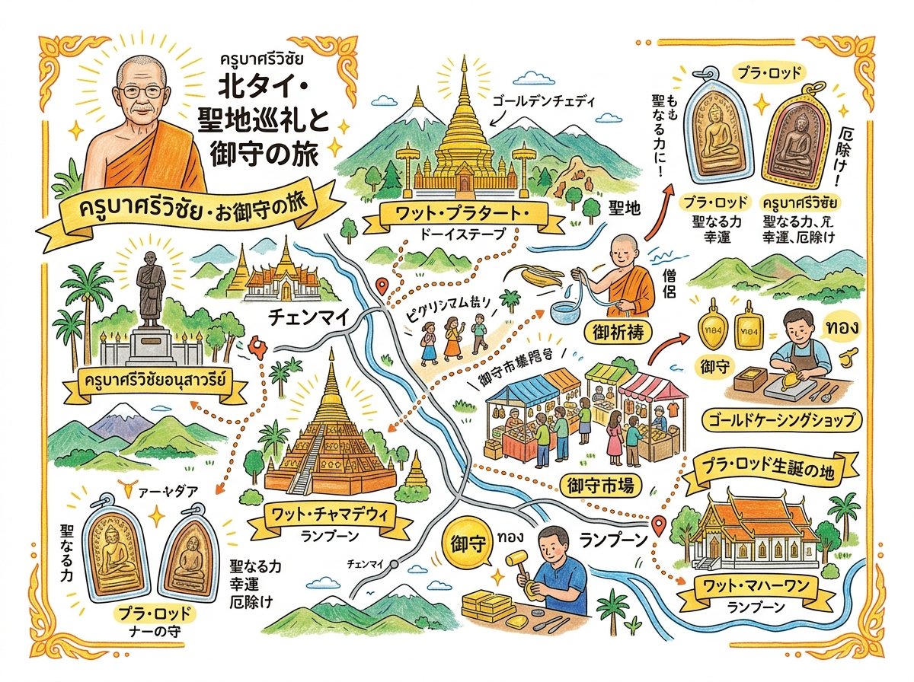

01
クルーバー・シーヴィチャイ ＆ 肖像メダル（ครูบาศรีวิชัย / เหรียญ พ.ศ. 2482）
無私・慈悲（メッター）・自己犠牲とランナー民族の団結・不屈の信仰の象徴。開運・不撓不屈の願望成就・災厄除け。
北タイの名僧（クルーバー・シーヴィチャイ等）ゆかりのお守りの歴史と文化。
クリックすると拡大して詳細を確認・印刷できます。

旅行者の持ち歩き・印刷に適した手書き風インフォグラフィック。

位置関係やルート、全体像を俯瞰できるワイドデザイン。
現地調査および公的データに基づく最新詳細情報。
無私・慈悲（メッター）・自己犠牲とランナー民族の団結・不屈の信仰の象徴。開運・不撓不屈の願望成就・災厄除け。
「ロード（รอด＝生き残る・生還する）」の名が示す通り、あらゆる致命的事故・銃創・災厄・呪術からの絶対的生還・強力な厄除け護身。
「コン（คง＝堅固・不滅・不動）」を意味し、地位と職責の安定、不動の信念、組織・家運の繁栄、長寿、外敵からの防御。
忍耐（カンティー）、不屈の信仰心、不条理な逆境や冤罪からの脱出、病気平癒、貧困からの救済。
戒律厳守、民族融和、慈悲の奇跡、自給自足（足るを知る経済）。毘沙門天護符や牛革ヤントによる財運招来・魔除け。
極限の瞑想（ヴィパッサナー）による大功徳、絶望的状況からの救済・希望、国境を越えた慈愛（メッター）。
戒律の清浄さ、精神の解脱、知恵（パンニャー）の開顕。精神統一・学問成就・心の平安・事故回避。
悪意・黒魔術・呪詛・怨念・嫉妬の完全無力化と因果応報による発信元への跳ね返し。身代わりとなって外層漆が割れ危機を知らせる護身符。